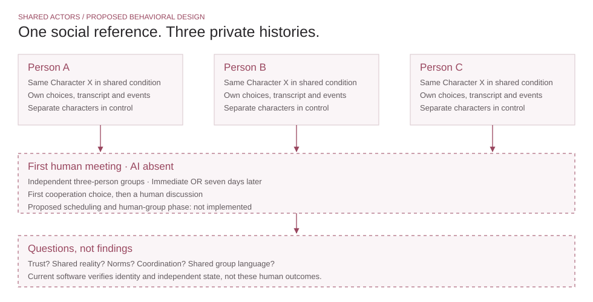

03 / Scale · Shared Artificial Social Actors
Can a private AI experience become a shared human reference?
Separate people. One continuing artificial character. A later meeting with each other.
Research development with Dr. Chen Zhou · Working Prototype 01 · Human effects untested
Question → Original idea
From private relationships to shared social reality.
Can people who independently interact with the same artificial social actor subsequently differ in trust, coordination, shared understanding, or group norms when they meet? Building on the lab’s shared-character paradigm, my temporal extension compares immediate and seven-day-delayed first human meetings.
The lab developed the broader paradigm. My contribution is the temporal design, behavioral framing, and pilot development with Dr. Zhou. This portfolio’s browser implementation was developed with Codex assistance.

What I built → How it works
The smallest test of identity and private state.
The working prototype maps three slots to a shared character or separate characters. Each page holds only its own three-turn choice history, script responses, and event log. The same identity can produce different responses without moving private conversations between sessions.
- Identity
- Public registry and rotation map a condition and slot to a continuing character.
- Personalization
- Authored branches respond to that page’s choices. There is no open-ended model generation.
- Private state
- Choices, transcript, and events remain in local page memory. Reset/reload clears them; an optional exported file remains on the visitor’s device.
- Human phase
- Metadata-only handoff and an illustrative payoff calculator. No connected group, real delay scheduling, or payment service.
Inspect the implemented architecture and boundary

Study design · Proposed
Test the human meeting, not only the AI exchange.
The core design crosses shared/separate identity with immediate/seven-day first meetings in independent three-person groups. The AI is absent during the first paid cooperation decision and discussion. The delayed identity contrast and identity × delay interaction answer different questions; plan power in independent groups.
| Question | Candidate measure | What it cannot establish alone |
|---|---|---|
| Does a shared identity change cooperation? | Group-average contribution in the first independent public-goods choice | A single task does not show friendship or lasting cohesion. |
| Does it change shared understanding? | Partner-specific shared-reality reports and blind-coded questions, uptake, and disagreement | Post-task association is not causal mediation. |
| Do expectations or norms converge? | Proposed follow-on measures of expected similarity, norm endorsement, and group language | Neither norm transmission nor a shared belief is measured in the demo. |
First pilot recognition, continuity, warmth, and comprehension. Match presentation and content; separate common labels, expected similarity, and shared experience as alternative explanations. Obtain ethics approval and preregister before recruitment. Two time points cannot establish a continuous lifespan.
Evidence → Learning → Next version
Identity is feasible. A social relationship is still a hypothesis.
Software tests verify character mapping, independent histories, transitions, public-only handoff, record copying, and payoff arithmetic. A working browser cannot establish felt connection, trust, conformity, or a seven-day social effect.
Implementation lesson
Temporary page state makes the identity/privacy assumption inspectable but cannot run a retained follow-up or real group. The next step is stimulus validation and an approved study system, not a more elaborate public demo.
Human usability feedback, pilot data, random assignment, durable private storage, synchronous discussion, and generative dialogue remain future work. The current calculator simulates three inputs from one visitor; it is not three people cooperating.